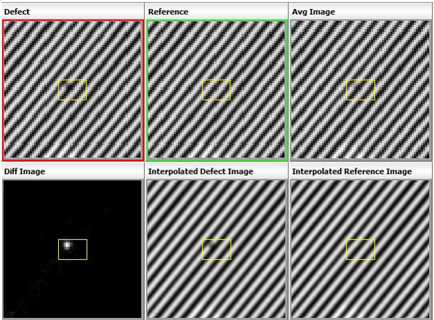

If any auxiliary
images such as external images, plug-in images, or layout images
are added to a defect in Calibre DefectReview, these images can
be selected using the Other Images option from
the right-click header menu of the display unit.
The Other Images menu
is empty if there are no external, plug-in, or layout images present
in a defect. The Auxiliary Images icon is enabled in the toolbar
of the IMU if at least one of the auxiliary images is configured
in the layout of the IMU window.
Figure 1. Defect
Window on Images